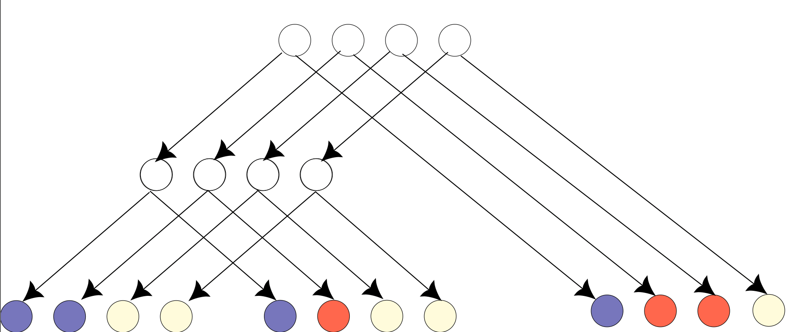
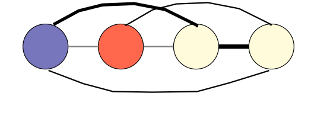
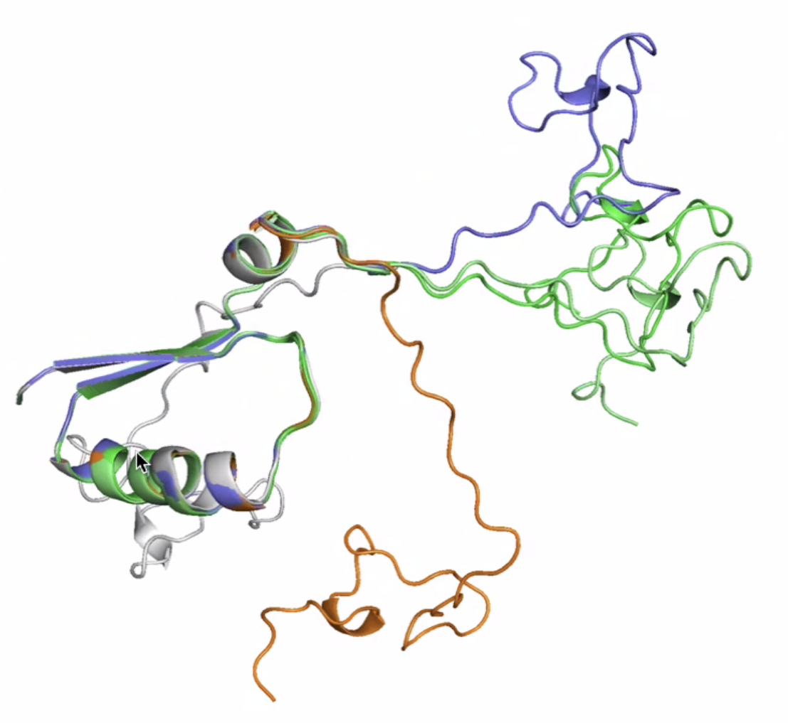
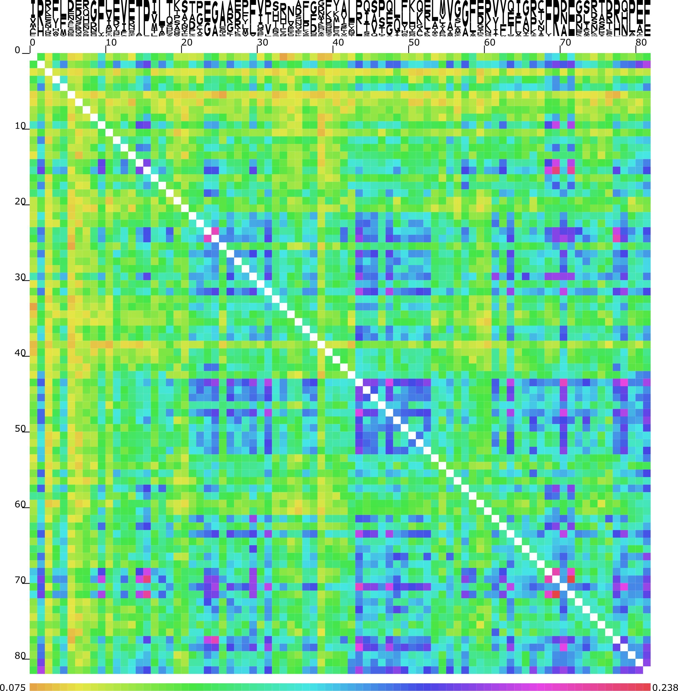
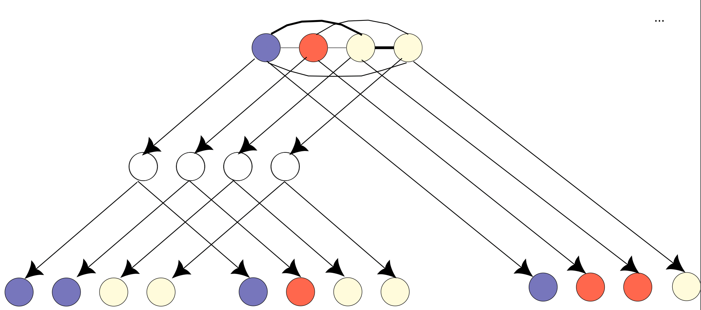
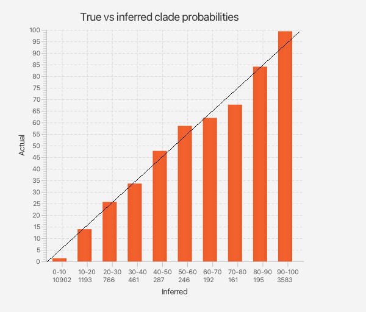
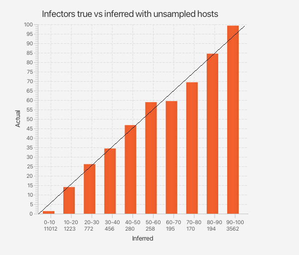
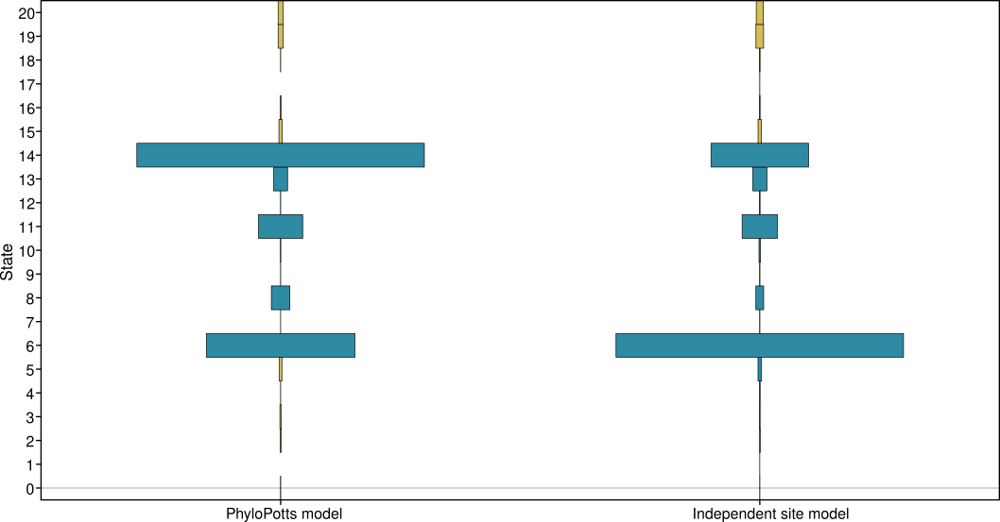
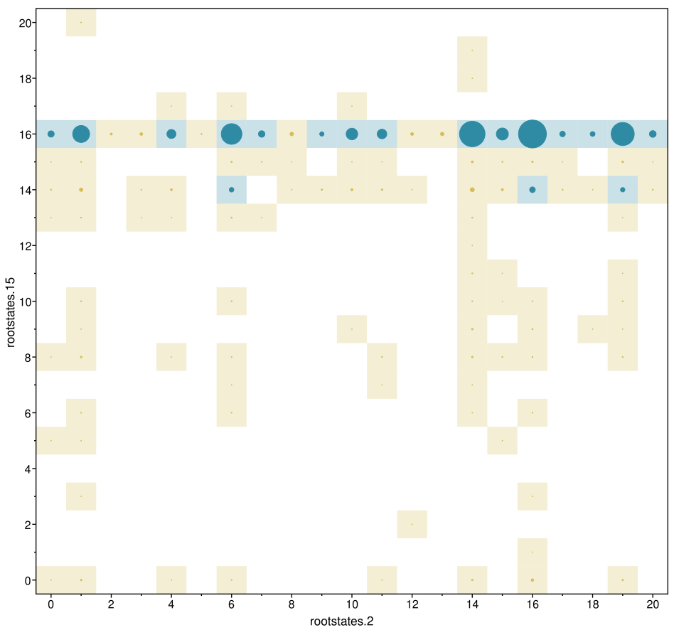
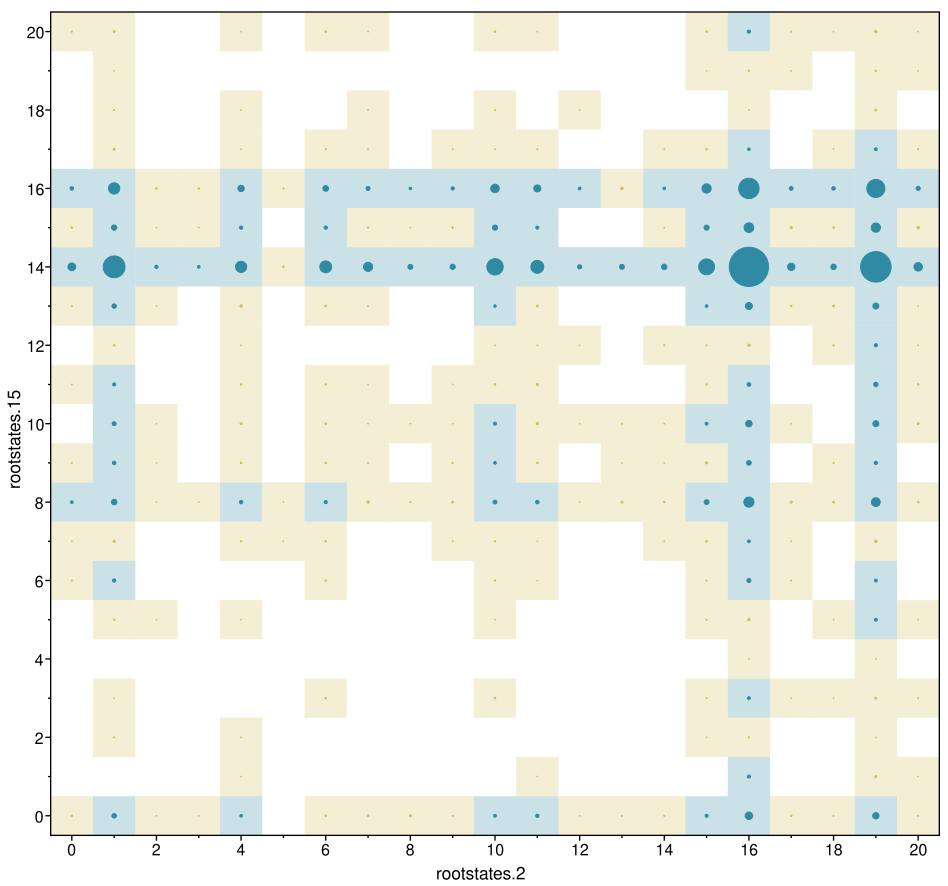

PhyloPotts models for phylogenetics with dependent sites
Feb 2026
Remco Bouckaert
Felsenstein's peeling algorithm assumes independence

Alignment $A=\{s_{11},\ldots,s_{NL}\}$
Site probability $P(site_i)=\sum_{s_{root}}p(s_{i,root})\sum$internal node states$\prod_{j=1}^{2N-1}p(s_{ij}|\pi_{ij})$
Alignment probability $=\prod_iP(site_i)$
1
Potts models assumes pairwise dependence
Sequence $S=\{a_1,\ldots,a_L\}$
$$\log P(S|h,J) \propto \sum_{i=1}^{L} h_i(a_i) + \sum_{i<j} J_{ij}(a_i, a_j)$$
$h_i$ profile term
$J_{ij}$ interaction term

2
Potts models
- Many names: undirected graphical model/direct coupling analysis/Markov random field
- Captures pairwise interaction
- Many, many parameters, use regularisation when training, use MCMC for training
- Successfully used in many areas using structural biology (protein design, 3D structure prediction, protein contact, etc.)
3
Potts models are purely statistical models
Does not "know" about physics
Does not "know" about protein folding

4 attempts of Alphafold to fold the same sequence
4
Potts models

5
PhyloPotts model
- Simplest way to combine Potts model with phylogenetics
- Extend state with sequence at root
- Efficient inference due to Felsenstein
- Pre-train Potts model on any alignment over the same sites (not jointly with tree)

6
Substitution models for PhyloPotts model
- Use 20 states + 1 gap state for amino acids
- Rate $q_{ij}, i\le 20, j\le 20$ from standard amino acid models with
- Simple gap model $q_{.g}=q_{g.}=1$
- $\pi_g=1/21$, scale other frequencies to sum to 1
$$
\begin{bmatrix}
- & q_{12} & q_{13} & \dots & q_{1n} & q_{1g}\\
q_{21} & - & q_{23} & \dots & q_{2n} & q_{2g}\\
\vdots & \vdots & \vdots & \ddots & \vdots & \vdots\\
q_{d1} & q_{d2} & q_{d3} & \dots & - & q_{ng}\\
q_{g1} & q_{g2} & q_{g3} & \dots & g_{gn} & -
\end{bmatrix}
$$
7
Alignment simulator for PhyloPotts models
Given a tree $T$, we want to simulate an alignment on the tips
- Sample root sequence from Potts model (independent of phylogeny)
- Traverse down tree, sample site $k$ according to $P(x|\pi_x=y)= e^{Qt}$ where $t$ time of branch.
- Collect sequences at tips of the tree
8
Well calibrated simulation study
| Statistic | Coverage |
| Tree height | 98 |
| Tree length | 97 |
| Yule model | 97 |
| birth rate | 95 |
| Root states 1..82 | >95 |

9
Same under (standard) independent site model
| Statistic | Coverage |
| Tree height | 98 |
| Tree length | 97 |
| Yule model | 97 |
| birth rate | 96 |
| Root states 1..82 | >95 |

10
Root state distribution for site 3

11
Pairwise root state distribution for sites


PhyloPotts vs Independent site model
12
Conclusions
- PhyloPotts models combine dependencies, while maintaining computational efficiency
- Do not appear to affect phylogenetic estimates (very much)
- Do substantially affect ancestral reconstruction (including gap sequences)
- Potential for better gap models
- Potential for joint Potts, tree and alignment estimation
- Potential to introduce more Potts using EMATS
Preprint: R.Bouckaert. A first order approximation of a joint Potts and phylogenetic model. BioRxiv 2026